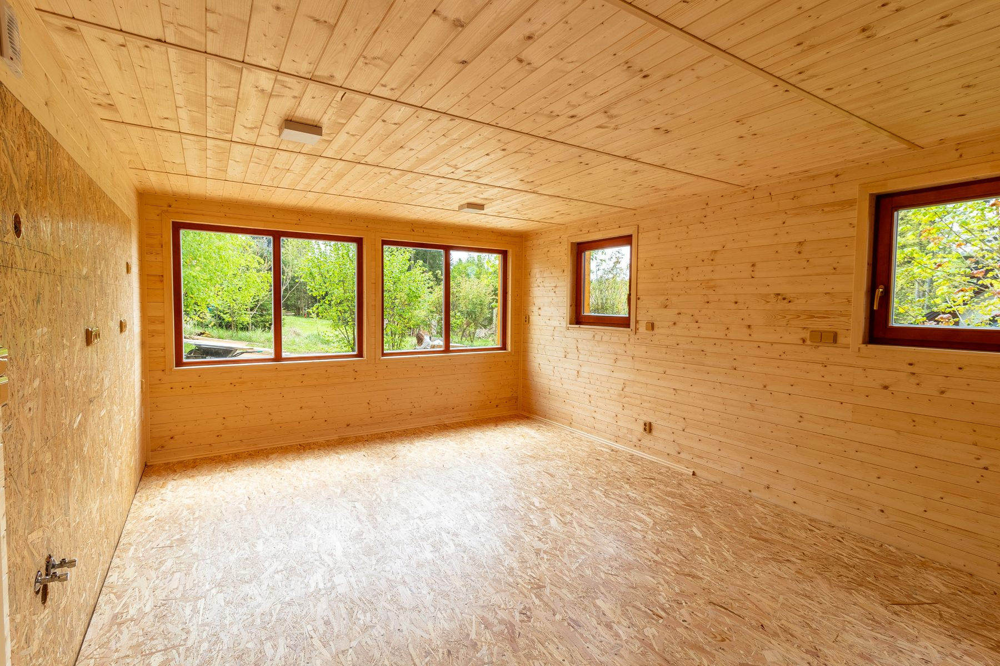

Krovy a nosné dřevěné konstrukce
Nové krovy, výměny poškozených částí a zásahy, kde je potřeba správně navázat staré i nové.

Tesařské, pokrývačské a klempířské práce
Tesařství Jihlava
Tesařství Jihlava řeší krov, střešní skladbu i finální návaznosti jako jeden celek. Výsledek má působit čistě, fungovat dlouhodobě a odpovídat konkrétní stavbě.
Chata Větrný Jeníkov jako reálný materiálový základ celé prezentace.
Průběh a služby
Tato část ukazuje, jak Tesařství Jihlava skládá nosnou konstrukci, střešní vrstvu a finální detail bez zbytečných mezičlánků nebo opakování stejné práce dvakrát.

Nové krovy, výměny poškozených částí a zásahy, kde je potřeba správně navázat staré i nové.
Vrstva po vrstvě tak, aby střecha fungovala v provozu, dobře odváděla vodu a seděla celé stavbě.
Žlaby, svody, lemování a napojení, která nesmějí rušit vzhled ani funkci celé realizace.
Další typické práce

Proč spolupracovat
Dobrá realizace nevypadá složitě. Složitost se má vyřešit předem, ne přenášet do každého kroku na stavbě nebo do dalších oprav po dokončení.
Komunikujete přímo se Stepanem Kvasnickou, tedy s člověkem, který řeší zakázku i její průběh na místě.
Neřeší se izolovaná část, ale návaznost krovu, krytiny, klempířských prvků a odvodu vody.
Rozsah, materiál i další krok mají být jasné předem, aby realizace držela rytmus a klid.
Přístup k zakázce
Od první návštěvy po dokončení jde o to, aby bylo od začátku jasné, co se řeší, v jakém pořadí a kde je potřeba největší pečlivost.
Nejdřív je potřeba vidět stavbu, popsat skutečný stav a určit nejdůležitější návaznosti.
Materiál, detail i rozsah prací se nastaví podle místa, ne podle univerzální šablony.
Provádění stojí na přesnosti a čistém detailu, který bude dobře sloužit i po letech.
Typické zakázky: nové krovy, opravy střech, pergoly, přístřešky a dřevěné návaznosti kolem domu.
Kontakt
Stačí krátký telefon nebo e-mail s popisem stavby. Domluvíme další krok, zaměření i to, co má pro vaši realizaci skutečný význam.